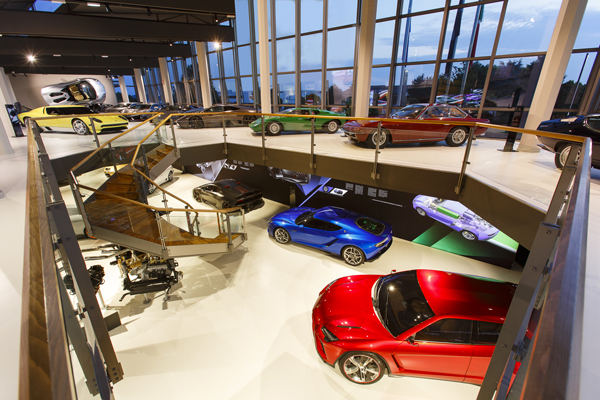

MuDeTec Il Museo Delle Tecnologie Lamborghini
Il Museo Lamborghini si rinnova diventando Museo delle Tecnologie, dove l’affascinante storia, gli iconici modelli e i tour delle linee di produzione raccontano oltre cinquant’anni di
innovazione che proiettano Lamborghini verso il futuro.
Il Mudetec offre un’esperienza interattiva, anche grazie al nuovo simulatore di guida, che amplifica le emozioni e la scoperta delle vetture in esposizione.
Dalle prime visionarie creazioni del genio di Ferruccio Lamborghini come la Miura e la Countach alle supersportive più recenti ed esclusive come la concept ibrida Asterion, la few-off
Centenario, la Huracán Performante e la Aventador SVJ.
Orari di apertura:
Aperto tutti i giorni:
Dal 1 Aprile al 31 Ottobre dalle 9.30 alle 19.00
Dal 1 Novembre al 31 Marzo dalle 9.30 alle 18.00

Tour delle Linee di Produzione Lamborghini
Dall’ingresso storico verso il futuro: visitare le linee di produzione è un viaggio unico per assistere alla nascita delle supersportive Lamborghini.
Dalla linea V12 dove motore e telaio della Aventador si uniscono per la prima volta, passando per la linea V10 dove nasce la Huracán. I tour guidati
che partono dal Mudetec rendono la visita un’esperienza indimenticabile alla scoperta dei luoghi più sorprendenti dell’azienda.
Orari di apertura:
Aperto tutti i giorni
Giorni di chiusura
Maggio: 1; agosto: 5-23; novembre: 1; dicembre: 23-31